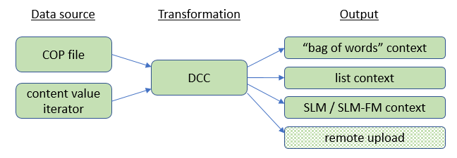

Dynamic Content Consumers
Dynamic Content Consumers are modules that take in (consume) user content, such as a list of names of address book contacts, and make it available for the recognizer to use (Cerence ASR, or the Cerence Cloud recognizer). User data is often only available at run-time. This means that, for efficiency, there needs to be a mechanism that allows most of the data needed for recognition to be prepared beforehand, while leaving the possibility to fill in certain parts at runtime.
In speech recognition, user content is part of the search space of “valid” utterances that the recognizer has to recognize. For Cerence ASR, the search space is created using contexts (see contexts). The mechanism provided by Cerence ASR is that of “slots”, which provide named “anchor” points in a context, where other contexts (called “guest contexts”) can be inserted at compile-time or at run time.
For example, suppose a grammar contains the following phrase:
"Set the heat to ??[num] degrees"
The phrase is fixed, except for the [num] part. In this case,
there are not so many distinct values for [num], and they are all
known beforehand, so it is entirely possible to add them to the
grammar ahead of time. However, for ease of maintenance and reuse, you
still might want to keep a separate subgrammar for the numbers that
you can easily reuse in other places (“Tune the radio to FM ??[num] point ??[num]
[megahertz]”).
In the previous example, all possible values from [num] can be
known beforehand. There are however many cases where that is not the
case, e.g. for Voice-Activated Dialing (VAD):
"Call ??[contact]"
In this case, [contact] will be a name, or a phrase like my
mother, my husband, etc. These latter phrases can be covered in
the grammar itself, as they will be common for many users. The list of
possible names, though will be user-specific, and will often be
availabe in the shape of the contact list on user’s cellular phone.
The contact list may change, either because the user adds and removes contacts from their phone, or because different users make use of the system. Either way, the contact list will need to be updated frequently in order to make sure the VAD system has the best chance of recognizing the contact names.
Dynamic Content Consumers (DCCs) are the way in which user-provided data is transformed into a shape that is usable by the recognizer. This is usually an ASR context, but it may also be remote upload of the data to the Cerence cloud, for use by a remote recognizer:
{kind=link}
There are basically two ways to provide user data to a DCC: in a COP file, or using a content value iterator. The DCC will load the data, and transform it into an ASR context, or prepare it for remote upload.
THe ASR contexts are called “guest” contexts. They are attached into
“host” contexts in specific locations called “slots”. In the VAD
example above, the slot would be called contact, and the guest
context would be a list context containing the names that can appear
in the contact location. See section Filling slots for
basic information on how to implement slot filling. Below we will look
specifically at dynamically filling slots.
Creating DCCs
DCCs can be created implicitly, by specifying their configuration in
the JSON configuration (typically in dcc.json).
DCCs can also be created explicitly, using the C API. If a DCC will
provide data from one data source, we use
nuance_asr5_IDynamicContentConsumer_create for creation.
e.g.:
nuance_asr5_IDynamicContentConsumer_create(asrManager, "DCP_music", listener, &musicConsumer);
DCC listeners
When you create a DCC, you can pass a
IDynamicContentConsumerListener component. This has three
callback functions, for receiving events, warnings and errors:
typedef void(*FUNC_nuance_asr5_IDynamicContentConsumerListener_onEvent)
(void *instance, nuance_asr5_DynamicContentConsumerEvent event, const LH_CHAR *message);
typedef void(*FUNC_nuance_asr5_IDynamicContentConsumerListener_onWarning)
(void *instance, nuance_asr5_DynamicContentConsumerError warning, const LH_CHAR *message);
typedef void(*FUNC_nuance_asr5_IDynamicContentConsumerListener_onError)
(void *instance, nuance_asr5_DynamicContentConsumerError error, const LH_CHAR *message);
For more details on listeners in Cerence ASR, refer to section Listeners. During the creation of a DCC, several events are sent to the listener callback functions.
Any contexts that were persisted before will be re-loaded, allowing
the ASR application that uses this context to run with pre-prepared
data. The way to enable persistent contexts is by putting a
"persist_contexts": "true" key-value pair next to the search
key in the section for the context type:
{
"dynamic_content_consumer" : [{
"name" : "<name>",
"content" : [{
"name": "<dcc_name>",
"content": [{ "...": "..." }],
"type": "<type>",
"<type>": {
"persist_contexts": "true",
"search": [{ "...": "..." }]
}
}]
}]
}
- When a DCC is created that has persisted contexts, the user is
notified with the number of the entries that are currently persisted
for this DCC (“0” in case the DCC is created for the first time).
The event callback
nuance_asr5_IDynamicContentConsumerListener_onEventwill be called with theNUANCE_ASR5_DCC_WITH_N_ENTRIESevent type. The message contains the number of entries. - Additionally, an event of type
NUANCE_ASR5_DCC_WITH_DCC_DATA_IDis sent to theonEventcallback, with the data ID in the message. The data ID is the value of theEDBTableUpdateIDtag of COP file from which the context was built (<null> in case the DCC was created for the first time), or the value of thedataIdparameter if the data was uploaded using a content value iterator (see Iterator API). - If the number of the entries cannot be obtained, the
onWarningcallback will be called with event typeNUANCE_ASR5_DCC_ENTRY_COUNT_UNKNOWN. This situation can occur for instance if not all of the persisted files are available.
DCC context types
DCCs can produce several different types of contexts. Depending on the source data, a specific type of context will be the most applicable, and DCCs allow to specify which one to use:
list
A list context uses each record in the input data as a possible phrase in the context.
bag_of_words
A “bag of words”-type of context allows any of the words appearing in the data source to appear in the audio input.
slm and slm_fm
SLM is short for “statistical language model”. FM is short for “fuzzy match”.
These contexts do not describe full phrases to be recognized, but rather they put a confidence score on the probability of recognized word sequences
remote
Data sources for DCCs
COP files
A COP file is a file that stores user data, and is used as input for dynamic content consumers. “COP” is short for “Categorized Orthographic Phonetic”. A COP file contains data in a tabular form. It consists of a few standard blocks:
- A file header (
#ECO V1.2 UTF-8;) - A data header, which describes overall properties of the data table:
- the COP scheme version
- the ID of the database
- update type and mode
- A column specification, which lists the column names, and additional properties such as the data type, and whether the data is quoted or not. Column names are expected to have a suffix that indicates whether the data uses regular orthography (“_Ortho”) or phonetic notation (“_Phon”).
An example:
#ECO V1.2 UTF-8;
#ECOScheme COP1 V1.6
#EDBDatabaseID NBT_Contacts_v_1_0
#EDBTableUpdateMode GivenInColumn
#EDBTableUpdateType FullUpdate
#EDBTableUpdateID 1
# Columns:
#Column1 FirstName_Ortho
#Column2 LastName_Ortho
#Column3 AdditionalInfo_Ortho
#Format(FirstName_Ortho) Quoted
#Format(LastName_Ortho) Quoted
#Format(AdditionalInfo_Ortho) Quoted
"Donald", "Knuth", "{ \"profession\": \"algorithm_expert\" }";
"Hopper", "Grace", "{ \"profession\": \"cobol_coder\" }";
The COP file format is detailed in separate PDF file: COP files.
The C API call to use to instruct a DCC to load data from a COP file is this one:
nuance_common_ResultCode nuance_asr5_IDynamicContentConsumer_startDataPreparationFromCopFile (
nuance_asr5_IDynamicContentConsumer *instance,
const LH_CHAR *cOPFilePath
)
Content value iterators
COP files are easy to use, but have the disadvantage that they have to be written to external storage, after which the DCC can be instructed to load the data from the file.
A more direct method is to use a content value iterator, where you can feed data directly to the DCC. This uses a different API call to start data preparation:
nuance_common_ResultCode nuance_asr5_IDynamicContentConsumer_startDataPreparation (
nuance_asr5_IDynamicContentConsumer *instance,
nuance_asr5_IContentValuesIterator *iterator
)
Briefly, the content value iterator works by providing implementations for an iterator API. The DCC will use the iterator API to walk all the records of the user data table (for example, all contacts in the user’s contact list).
The iterator API implementation can then make use of the content values API to insert a set of key-value pairs for each entry (in the example, the relevant fields of each contact). For each entry, the system can specify if the record should be added or deleted.
The following sequence diagram illustrates what happens when
startDataPreparation is called on a DCC:
{kind=link}
In this setup, the IContentValueIterator must be implemented by
the system developer. The DCC and the IContentValues API are
provided by Cerence ASR. Every blue box in the diagram is a data record
being retrieved by the DCC.
The DCC, on the left, coordinates the data ingestion process. It
starts by initializing the iterator, by calling the start
function. This function initializes everything that requires
initialization. As part of this process, it receives also a
description of the content, where it can retrieve the DCC’s column
names and the corresponding data types (using the content format API).
When initialization is done, the DCC will call next to inquire
whether more data is to be loaded. If yes, then get will be called
to produce a new nuance_asr5_IContentValues object containing the
next set of key-value pairs, where the keys must match those in the
content description received by start.
The get function will use the IContentValues API to construct
the content values object and fill it with data.
Finally, when all data has been loaded (signalled by next setting
its hasNext parameter to LH_FALSE), the finish function is
called to allow the content value iterator to perform cleanup if needed.
In the sections below, you will find more detail on the the Content Value Iterator API, Content Values API, and the Content Format API.
Iterator API
The iterator API must be implemented by the developer, and will be used by the DCC to walk a list of user data, where each list entry is a record that can have one or more values.
The image above shows the sequence of calls that happens when the DCC uses the iterator to get the data. The following function signatures should be implemented by the iterator:
typedef nuance_common_ResultCode (*FUNC_nuance_asr5_IContentValuesIterator_start)
(void *instance, const nuance_asr5_IContentFormat *contentFormat, nuance_common_String **dataId);
typedef nuance_common_ResultCode (*FUNC_nuance_asr5_IContentValuesIterator_next)
(void *instance, LH_BOOL *hasNext);
typedef nuance_common_ResultCode (*FUNC_nuance_asr5_IContentValuesIterator_get)
(void *instance, nuance_asr5_IContentValues *contentValues, nuance_asr5_IContentValuesIterator_ModificationType *modificationType);
typedef nuance_common_ResultCode (*FUNC_nuance_asr5_IContentValuesIterator_finish)
(void *instance);
These functions should behave as follows:
The
startfunction receives from the DCC a description of the content that it expects the iterator to return in thegetfunction. This content description is the one in thecontentkey in the DCC description:"dynamic_content_consumer" : [{ "name": "DCC_LOCAL_TITLE", "content": [{ "type": "string", "name": "Title_Ortho" }], ...In this example, the content format API will return the pair “Title_Ortho”, “string”. The content description in the
contentFormatparameter uses the content format API; please check section Content Format for details.The
dataIdparameter is a string identifier that is provided back to the system through the DCC’sIDynamicContentConsumerListener. See here for more information.After the call to
start, the current iterator position is invalid. The current iterator position should be set to the first element in the call tonextthat follows the call tostart.Pseudo-code example (no result code handling):
nuance_common_ResultCode ExampleContentValuesIterator_start(void *instance, const nuance_asr5_IContentFormat *contentFormat, const LH_CHAR **dataId) { nuance_common_ResultCode resultCode; nuance_common_StringList *names; /* Examine the content format. This is optional. The application can store the names */ resultCode = contentFormat->nuance_asr5_IContentFormat_getNames(instance, &names); { nuance_common_String *type; /* iterate over the string list and for each name call */ resultCode = contentFormat->nuance_common_ResultCode nuance_asr5_IContentFormat_getType(instance, name, &type); /* the application can store the type for the name in a type map here */ } /* set the iterator to invalid position here */ return NUANCE_COMMON_OK; }
The
nextfunction should set itshasNextparameter toLH_TRUEwhen there are more records to be loaded, orLH_FALSEif the end of the data was reached.Pseudo-code example (no result code handling):
nuance_common_ResultCode ExampleContentValuesIterator_next(void *instance, LH_BOOL *hasNext) { /* if the iterator is at the invalid position set it to the first line here */ /* else proceed the iterator to the next line */ /* if there is data at the current position */ *hasNext = LH_TRUE; /* else */ *hasNext = LH_FALSE; return NUANCE_COMMON_OK; }
The
finishfunction is called when all data has been loaded, i.e. afternexthas returnedLH_FALSE. This function can do any cleanup that is needed at the end of the data upload.Pseudo-code example (no result code handling):
nuance_common_ResultCode ExampleContentValuesIterator_finish(void *instance) { /* do cleanup here: e.g. close streams, free memory, etc. */ return NUANCE_COMMON_OK; }
The
getfunction does most of the work. When it is called, it should fetch the next data row, and enter the data into theContentValueobject. This is done using the content values API, using the rightputfunction for each data element. For example, to enter a string for theTitle_Orthofield, you would do:rc = nuance_asr5_IContentValues_putString(contentValues, "Title_Ortho", "Beat It");
The
modificationTypeargument for thegetfunction is defined as follows:typedef enum { NUANCE_ASR5_ICONTENTVALUESITERATOR_MT_ADD, /**< Add the content value */ NUANCE_ASR5_ICONTENTVALUESITERATOR_MT_DELETE_MATCHTYPE_EXACT, /**< Delete the given entry (Note: Only supported for Local DCC) */ NUANCE_ASR5_ICONTENTVALUESITERATOR_MT_DELETE_MATCHTYPE_CONTAINS /**< Delete entries that contains this value (Note: Only supported for Local DCC) */ } NUANCE_ASR5_IContentValuesIterator_ModificationType;
It instructs the DCC to either add or delete the current entry. For deleting an entry, there are two options:
MATCHTYPE_EXACT- all field values must match exactly with the values provided in theIContentValuesargument.MATCHTYPE_CONTAINS- this type allows theIContentValuesobject to only provide a subset of the data fields.
Pseudo-code example (no result code handling):
nuance_common_ResultCode ExampleContentValuesIterator_get( void *instance, nuance_asr5_IContentValues *contentValues, nuance_asr5_IContentValuesIterator_ModificationType *modificationType) { nuance_common_ResultCode resultCode; /* get the current entry line */ /* for each element of the current entry line retrieve the name from the stored name list */ /* retrieve the corresponding type from the type map and call the appropriate put function */ /* e.g. if the type is a string then call */ resultCode = nuance_asr5_IContentValues_putString(contentValues, name, value); /* specify if the current line should be added or removed */ /* currently only addding is supported */ *modificationType = NUANCE_ASR5_ICONTENTVALUESITERATOR_MT_ADD; return NUANCE_COMMON_OK; }
The iterator is created by collecting the functions in a vtable,
and then creating the content values iterator. It should be destroyed
after the iterator is finished, to clean up all resources. See section
Listeners for more details.
Content Values API
In the get function in the content value iterator API, the data
elements are stored into a IContentValue structure.
The IContentValue object itself is provided by the DCC that calls
get, so there is no need to construct the IContentValue object
yourself.
The data is added by repeatedly calling the put* functions,
depending on how many data elements should be entered, and their
types. There is a function for each of the following types: 32 bit
integer, 64 bit integer, string, string list and string list list:
ASR_C_EXPORT nuance_common_ResultCode nuance_asr5_IContentValues_putInt
(nuance_asr5_IContentValues *instance, const LH_CHAR *key, LH_S32 value);
ASR_C_EXPORT nuance_common_ResultCode nuance_asr5_IContentValues_putInt64
(nuance_asr5_IContentValues *instance, const LH_CHAR *key, LH_S64 value);
ASR_C_EXPORT nuance_common_ResultCode nuance_asr5_IContentValues_putString
(nuance_asr5_IContentValues *instance, const LH_CHAR *key, const LH_CHAR *value);
ASR_C_EXPORT nuance_common_ResultCode nuance_asr5_IContentValues_putStringList
(nuance_asr5_IContentValues *instance, const LH_CHAR *key, const LH_CHAR * const *value, LH_S32 nvalue);
ASR_C_EXPORT nuance_common_ResultCode nuance_asr5_IContentValues_putStringListList
(nuance_asr5_IContentValues *instance, const LH_CHAR *key, const nuance_common_StringListList *value);
The key argument is the name of the “column” of the data element,
from the content format, such as “Title_Ortho”.
Content Format
The content format API allows the start function from the content
value iterator API to find the names and types of the data elements
that the iterator is supposed to return to the DCC.
This is useful in situations where it is not known beforehand what the data fields are called, or what their types should be.
The content format API is defined as follows:
ASR_C_EXPORT nuance_common_ResultCode nuance_asr5_IContentFormat_getNames
(
const nuance_asr5_IContentFormat *instance,
nuance_common_StringList **names
);
ASR_C_EXPORT nuance_common_ResultCode nuance_asr5_IContentFormat_getType
(
const nuance_asr5_IContentFormat *instance,
const LH_CHAR *name,
nuance_common_String **type
);
The application uses the getNames function first, to retrieve a
list of the required column names. Then, by calling the getType
function for each column name the application can query the expected
type.
Using SAMPA phonetic notation
In addition to the default L&H+ phonetic notation, it is possible, in COP files, to also use the Sampa phonetic alphabet for a number of languages.
As indicated above, a COP file can contain phonetic information (see COP files): data in columns for which the names end in “_Pho”, are interpreted as phonetic data. Using a specific tag, you can indicate that this data is specified in Sampa notation.
For example:
#ECO V1.2 UTF-8;
#ECOScheme COP1 V1.6
#EDBDatabaseID NBT_AddressBook_v_1_0
#EDBTableUpdateID AddressBookTable_20100708_0501
#EDBTableUpdateMode GivenInColumn
#EDBTableUpdateType FullUpdate
# Columns:
#Column1 Entry_ID
#Column2 EDBTableUpdateMode
#Column3 FirstName_Ortho
#Column4 FirstName_Pho
#Column5 LastName_Ortho
#Column6 LastName_Pho
# Column1 to Column2 must contain defined values, the others may be empty.
# In the column EDBTableUpdateMode the allowed values are: r (remove) and a (add)
#Format(Entry_ID) Ident
#NumIDFormat(Entry_ID) Decimal
#NumIDBinLength(Entry_ID) 64
#Format(EDBTableUpdateMode) Ident
#Format(FirstName_Pho) Ident
#Format(LastName_Pho) Ident
34 ; a; "John"; <t>[LNG=SR-ENU]dZAn</t>; "Smith"; <t>[LNG=SR-ENU]smIT</t>
In this COP file, columns 4 (“FirstName_Pho”) and 6 (“LastName_Pho”) contain phonetic transcriptions of columns 3 and 4.
As an example, look at the entry <t>[LNG=SR-ENU]dZAn</t>:
- The
<t>and</t>begin and end tags indicate that the enclosed strings are Sampa data. - The
[LNG=SR-ENU]directive indicates to the Sampa convertor in which language the Sampa data is written. dZanis the Sampa data itself.
Dynamic context creation
Data preparation
When the DCC has been created, data processing can be started in one of two ways:
start data processing by providing the COP file to the consumer:
nuance_asr5_IDynamicContentConsumer_startDataPreparationFromCopFile(musicConsumer, "copFilePathName.cop");
See section COP files for more details.
start data processing by providing music data to the consumer with the nuance_asr5_IContentValuesIterator:
nuance_common_ResultCode nuance_asr5_IDynamicContentConsumer_startDataPreparation( nuance_asr5_IDynamicContentConsumer *instance, nuance_asr5_IContentValuesIterator *iterator );
This will make the content provider poll the
iteratorfor data to add. See section Content value iterators for more details.
It is important to keep the IDynamicContentConsumer object alive as long as there is an application that depends on this DCC.
After the data preparation is completed (for ListContextDCC, SlmFmDCC,
WUWDCC and BagOfWordsDCC), the user is notified with a
DCC_DATA_PREPARATION_FINISHED event. Unless the data preparation
was aborted, the message of the event contains the current total
number of entries contained within this DCC, together with the number
of added, removed, failed to add and failed to remove entries. The
message format looks like this:
current_total_number=x added=y failed_to_add=z removed=t failed_to_remove=u
In case of using remove via matching strings, the numbers will be invalidated and -1 will be returned for all the values.
Additionally, if the contexts for the DCC are persisted, the change in the number of the entries for this DCC is also persisted to notify the user when the DCC is re-created next time. Together with the number of entries, the user will be informed with the data ID if it has been provided and stored with persisted context.
Supplying the context to the ASR application
The contexts created by DCCs must be connected to the ASR applications that need them. In this section we will show how this works, by example. We start by defining a fairly complex DCC:
1 2 3 4 5 6 7 8 9 10 11 12 13 14 15 16 17 18 19 20 21 22 23 24 25 26 27 28 29 30 31 32 33 34 35 36 37 38 39 40 41 42 43 44 45 46 47 48 49 50 51 52 53 54 55 | {
"name" : "DCC_SLM_FM_MUSIC_SLM_ONLY",
"content" : [{
"type" : "base64",
"name" : "ID"
},{
"type" : "string",
"name" : "ARTIST_ORTHO"
},{
"type" : "string",
"name" : "TITLE_ORTHO"
},{
"type" : "string",
"name" : "ALBUM_ORTHO"
}],
"type" : "slm_fm",
"slm_fm" : {
"lexicon" : {
"clc" : {
"filename" : "clc_enu_cfg3_v6_0_2.dat"
}
},
"slm_search" : [{
"name" : "slm_music_artist.fcf",
"acmod" : "acmod6_6000_enu_gen_car_f16_v1_0_1.dat",
"link" : {
"type" : "content",
"content" : {
"clc_category" : "normal",
"name" : "ARTIST_ORTHO"
}
}
},{
"name" : "slm_music_title.fcf",
"acmod" : "acmod6_6000_enu_gen_car_f16_v1_0_1.dat",
"link" : {
"type" : "content",
"content" : {
"clc_category" : "normal",
"name" : "TITLE_ORTHO"
}
}
},{
"name" : "slm_music_album.fcf",
"acmod" : "acmod6_6000_enu_gen_car_f16_v1_0_1.dat",
"link" : {
"type" : "content",
"content" : {
"clc_category" : "normal",
"name" : "ALBUM_ORTHO"
}
}
}]
}
}
|
This DCC consumes content in 4 columns, as defined in lines 3 to 15: it expects artist, title and album data, along with a Base64-encoded ID string.
As the type field indicates, the DCC will provide SLM/FM contexts
as the result of processing the data ("type": "slm_fm"). The JSON
dictionary for the slm_fm key specifies how to generate the
contexts.
The slm_search key contains an array with three entries:
slm_music_artist.fcf, slm_music_title.fcf and
slm_music_album.fcf. For each of these, an SLM context will be
created: each block contains the “recipe” for an SLM.
For each context, the corresponding acoustic model must be provided,
with the acmod key. The link block defines which data will be
used for generating the context. In this case, the each SLM context
contains data from one column of the input data. (See
below for a more complex example.)
The following application definition shows how to use one of the
contexts defined by the above DCC. By declaring a part of the search
as "type": "dynamic", the system knows that that part should be
retrieved from a DCC.
The dynamic block provides the details:
dynamic_content_consumer gives the name of the DCC, and
search_name specifies which context, produced by this DCC, to use.
{
"application": [{
"name": "DCC_PROVIDED_SEARCH",
"input": [{
"type": "asr",
"asr": {
"search": [{
"type": "dynamic",
"dynamic": {
"dynamic_content_consumer": "DCC_SLM_FM_MUSIC_SLM_ONLY",
"search_name": "slm_music_artist.fcf"
}
}]
}
}]
}]
}
The following example shows how to fill a slot in static host context:
{
"application": [{
"name": "USES_TWO_DCC",
"input": [{
"type": "asr",
"asr": {
"search": [{
"name": "SEARCH_VAD_NAMES",
"type": "static",
"static": {
"file_name": "vad_unconstrained.fcf"
},
"connection": [{
"expansion_point": "slot:VAD#firstname",
"search": {
"type": "dynamic",
"dynamic": {
"dynamic_content_consumer": "VAD_NAMES_TWO_DCC_2",
"search_name": "internal_vad_firstname.fcf"
}
}
},{
"expansion_point": "slot:VAD#lastname",
"search": {
"type": "dynamic",
"dynamic": {
"dynamic_content_consumer": "VAD_NAMES_TWO_DCC_1",
"search_name": "internal_vad_lastname.fcf"
}
}
}]
}]
}
}]
}]
}
In the example, the static host context vad_unconstrained.fcf
contains two slots. They are filled in the connection block, where
each expansion point if filled with a dynamically created guest
context. In this case, the two contexts are created by different DCCs,
but as shown above, one DCC can create several contexts. If the source
data is the same for both DCCs, then the setup shown above could be
combined in a single DCC, which would create both contexts.
In the above example, each context created by the DCC was based on a
single column of data from the user data source file. This example
shows how to incorporate several fields in the same context. The
result in this example is a list context, as opposed to an SLM
context, as shown by the "type": "list" key-value pair.
1 2 3 4 5 6 7 8 9 10 11 12 13 14 15 16 17 18 19 20 21 22 23 24 25 26 27 28 29 30 31 32 33 34 35 36 37 38 39 40 41 42 43 44 45 46 47 48 49 50 51 | {
"dynamic_content_consumer" : [{
"name" : "DCC_LOCAL_VAD",
"content" : [{
"type" : "string",
"name" : "FirstName_Ortho"
},{
"type" : "string_list",
"name" : "FirstName_Pho"
},{
"type" : "string",
"name" : "LastName_Ortho"
},{
"type" : "string_list",
"name" : "LastName_Pho"
}],
"type" : "list",
"list" : {
"lexicon" : {
"clc" : {
"filename" : "clc_enu_mpthreevadml_v6_0_1.dat",
"vocon_parameters" : {
"LH_CLC_PARAM_NUMBER_OUTPUT_TRANSCRIPTIONS" : 5
}
},
"lex_cache" : {
"persist" : true,
"cache_word_size" : 1000
}
},
"search" : [{
"name" : "firstname_lastname.fcf",
"acmod" : "acmod6_6000_enu_gen_car_f16_v1_0_1.dat",
"link" : [[{
"type" : "content",
"content" : {
"tag_name" : "firstname",
"clc_category" : "name",
"name" : "FirstName"
}
},{
"type" : "content",
"content" : {
"tag_name" : "lastname",
"clc_category" : "name",
"name" : "LastName"
}
}]]
}]
}
}
|
THe key here is that the link field contains multiple entries: one
for the first name, and one for the last name. Every row in the list
context will thus be composed of a FirstName-LastName pair.
Data updates
It is possible to update the dynamic data by adding new entries on top
of the existing data or from scratch. In order to add new entries,
startDataPreparationFromCopFile should be called again where the
input argument copFilePathName.cop should provide the new entries.
However if the previously added data is wanted to be purged and the
new entries should be added from scratch deleteAll should be
called before calling startDataPreparationFromCopFile
nuance_asr5_IDynamicContentConsumer_deleteAll(musicConsumer);
nuance_asr5_IDynamicContentConsumer_startDataPreparation(musicConsumer, dataProvider);
Note that if the recognizer is already running an application that is using the DCC, the dynamic content consumer thread will be blocked and wait for the recognizer to finish before updating the data. However, if the recognizer starts after the DCC starting to update the data, it will not wait. The recognizer can be started at any time. If the data preparation of the DCC is still ongoing it will be paused and the contexts will be generated from the data that already has been consumed by the DCC. The recognition is performed on these contexts. Once the recognition has finished the DCC resumes data preparation at the point it was paused.
However, it is possible to specify a set of DCCs that the recognition
will wait for. As such, recognition will only start after the
referenced DCCs have finished their data preparation. This set can be
defined via configuration and changed at runtime (via vh_callback).
For more information, see Cerence ASR JSON configuration reference (ASR JSON
configuration reference), and Dynamic configuration at runtime (the
vh_callback concept).
DCCs and the asynchronous API
When using the DCC API, there are some important facts to remember. An application that depends on a dynamic content consumer, should most probably wait for it to finish. Since we are dealing with an asynchronous API, it is important to wait for finished event if more than one operation in executed on the DCC.
Example:
nuance_asr5_IDynamicContentConsumer_create(...,dccListener, dcc);
nuance_asr5_IDynamicContentConsumer_startDataPreparation(dcc);
wait for event DCC_DATA_PREPARATION_FINISHED
nuance_asr5_IApplication_create(..., application);
nuance_asr5_IAsrManager_setApplications(..., application);
nuance_asr5_IRecognizer_start
This will guarantee that the application will be using the context
created by startDataPreparationFromCopFile, and not the persisted
one loaded when the DCC was created.
In conclusion, a dcc can be used for three different purposes:
- Load context from the cache: When the dcc is created, it first tries to load related persisted contexts. If such contexts exist, they can be used by the application.
- Preparing data: This is done by calling
startDataPreparationFromCopFile. This will update/overwrite the existing data. - deleteAll: Calling this will delete persisted contexts. The next
startDataPreparationFromCopFilewill create a context from scratch.
Lexicons / CLCs
The DCC examples shown above both use context from COP files that only contain “_Ortho” fields. This means that no phonetic transcriptions are available, which is necessary for creating a context. The DCC will have to do this for all entries in the user data.
Most often, this will be done by providing a CLC buffer (“common linguistic component”, shared with Vocalizer). In the first example above, lines 18-21, shows how this is done:
{
"lexicon" : {
"clc" : {
"filename" : "clc_enu_cfg3_v6_0_2.dat"
}
}
}
It is really only needed to specify the CLC buffer file name (remember the ASR paths), and the DCC will handle the rest.
The second example shows how to specify parameters for the CLC component, and how to define a cache to avoid calling the CLC component again for entries that occur multiple times in the user data:
{
"lexicon" : {
"clc" : {
"filename" : "clc_enu_mpthreevadml_v6_0_1.dat",
"vocon_parameters" : {
"LH_CLC_PARAM_NUMBER_OUTPUT_TRANSCRIPTIONS" : 5
}
},
"lex_cache" : {
"persist" : true,
"cache_word_size" : 1000
}
}
}
Remote DCCs
For details on remote DCCs, please refer to section Data upload